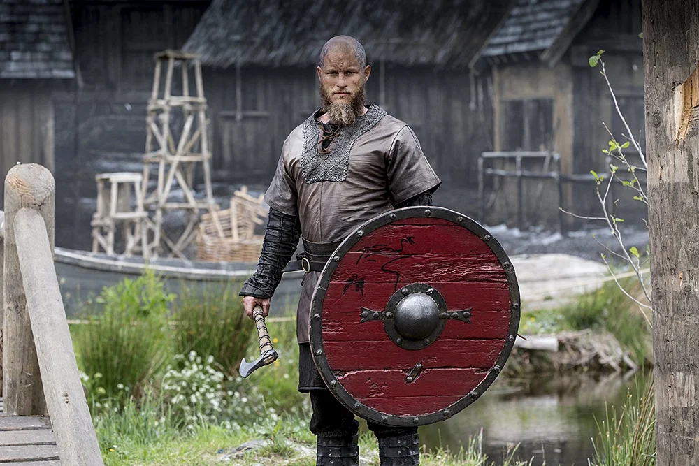

Ragnar Lothbrok
Ragnar Lothbrok (Old Norse Ragnarr Loðbrók, also anglicised as Ragnar Lodbrok), whose epithet means 'Hairy-breeches' or 'Shaggy-breeches', was a legendary Viking king, with Old Norse sagas, poetry, and medieval Latin sources telling of his accomplishments in Scandinavia, Francia, and Anglo-Saxon England during the 9th century CE.Commonly occurring elements in these stories are his marriages to Thora and Aslaug, as well as his fathering of many famous sons